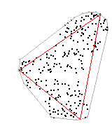
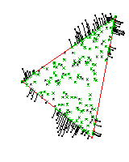
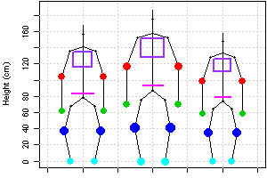

The Merriam-Webster Online Dictionary defines an archetyp as the original pattern or model of which all things of the same type are representations or copies. Then, the aim of the archetypal analysis is to find the "pure types", the archetypes, within a set defined in a specific context. The concept of archetypes is used in many different areas, the set can be defined in terms of literature, philosophy, psychology and also statistics. Here, the concrete problem is to find a few, not necessaily observed, points (archetypes) in a set of multivariate observations such that all the data can be well represented as convex mixtures of the archetypes.
  
The stable version of archetypes is available on CRAN; issue the following from within R to install and load it:
R> install.packages("archetypes")
R> library("archetypes")
From Spider-Man to Hero -- Archetypal Analysis in R:
This vignette
(an updated version
of Eugster and Leisch,
2009) demonstrates the usage of the package:
R> vignette("archetypes", package = "archetypes")
R> edit(vignette("archetypes", package = "archetypes"))robust-toy: Weighted and robust archetypal analysis by means of an artificial toy data set.
R> demo("robust-toy", package = "archetypes")robust-ozone: Weighted and robust archetypal analysis by means of the Ozone (mlbench) data set.
R> demo("robust-ozone", package = "archetypes")robust-simulation: Simulation study of the robust archetypal analysis.
R> demo("robust-simulation", package = "archetypes")For the application of archetypal analysis see demos in the benchmark and SportsAnalytics packages.
The development version is available on R-Forge.